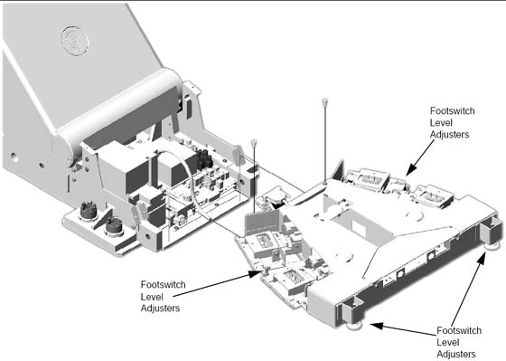
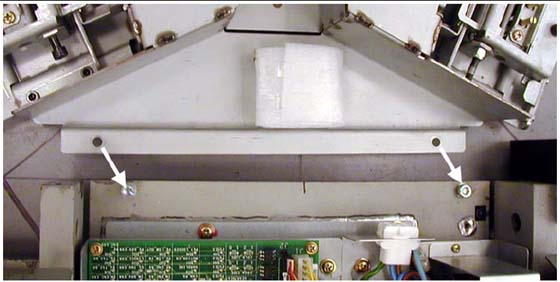
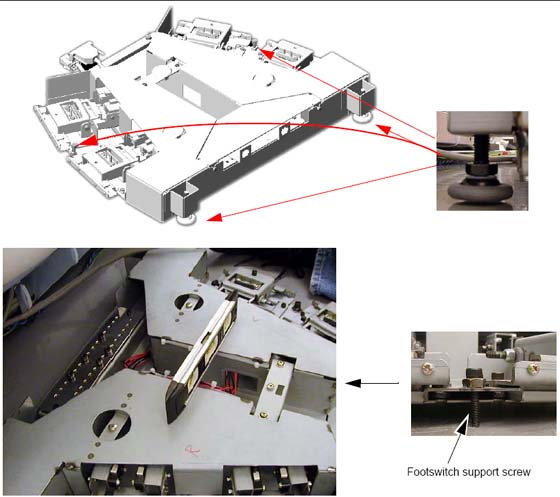

Operating Documentation
Direction 5193574-800, Rev# 22
LightSpeed 7.X Service Methods
Module Version 1.0, Version Date 4/22/10
Operating Documentation |
| Required Persons | Preliminary Reqs | Procedure | Finalization |
|---|---|---|---|
| 1 (FE or mechanical supplier) | Not Applicable | 1 hour | Not Applicable |
| Item | Qty | Effectivity | Part# | Manufacturer | |
|---|---|---|---|---|---|
| Standard Install Tool Kit | 1 | - | - | - | |
After table positioning is completed and the anchors are installed, install the footswitch assembly as shown in Illustration 1.
Illustration 1: Footswitch Assembly Installation

Pop off foot pedal screw cover tabs.
Remove foot switch covers.
Remove 3 Phillips screws that secure the assembly cover.
Remove the footswitch assembly cover.
Using two (2) M6 bolts, attach the footswitch assembly to the table base.
Illustration 2: Attach Footswitch

Level the footswitch assembly using the three (3) level adjusters. Two are on the gantry side and one is in the middle. Use a 9 in. level to check the levelness in all directions.
Illustration 3: Level Footswitch

No finalization steps.